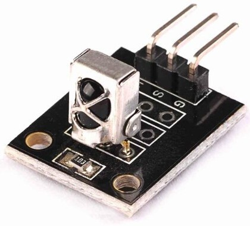

Модуль инфракрасного датчика KY-022
Модуль KY-018 для Аrduino оснащён инфракрасным датчиком (ИК-приемник на базе VS1838B), что позволяет считывать сигналы с пультов дистанционного управления. Модуль обладает большой универсальностью и позволяет принимать команды от большинства ИК пультов бытовой техники. Модуль также содержит красный светодиод, сигнализирующий о поступлении ИК-сигнала.
Технические характеристики модуля KY-022:
- Напряжение питания:
- номинальное — 5 В;
- диапазон — 2,7 – 5,5 В;
- предельное — 6 В.
- Частота сигнала:
- несущая основная — 38 кГц;
- диапазон — 33 – 43 кГц.
- Дистанция приема от обычного пульта — 18-20 м.
- Угол приема — 90°.
- Диапазон рабочих температур — -20…+85°C.

Назначение выводов представлено в таблице 1.
Таблица 1
| Контакт | Назначение | |
|---|---|---|
| Y | S | Выход цифрового сигнала. |
| R | Power | +5V - Питание положительный полюс. |
| G | — | Общий (GND) |
Для работы с модулем KY-022 используется библиотека IRremote_master.
Скетч №1
Скетч принимает команды от инфракрасного пульта и показывает их код в мониторе порта.
#include "IRremote.h" // подключение библиотеки IRrecv irrecv(11); // указываем вывод, к которому подключен приемник decode_results results; void setup() { Serial.begin(9600); // выставляем скорость COM-порта irrecv.enableIRIn(); // запускаем прием } void loop() { if (irrecv.decode(&results)) { // если данные пришли Serial.println(results.value, HEX); // печатаем данные irrecv.resume(); // принимаем следующую команду } delay(500); }
Иногда появляется код FFFFFFFF. Этот код выводится, когда кнопка на пульте долго удерживается и на Arduino приходит одинаковая команда.
Источники
arcadepub.ru - ИК приемник KY-022. Датчики. Ардуино
funnydiy.net - Инфракрасный датчик. Модуль KY-022 для Ардуино. Обзор